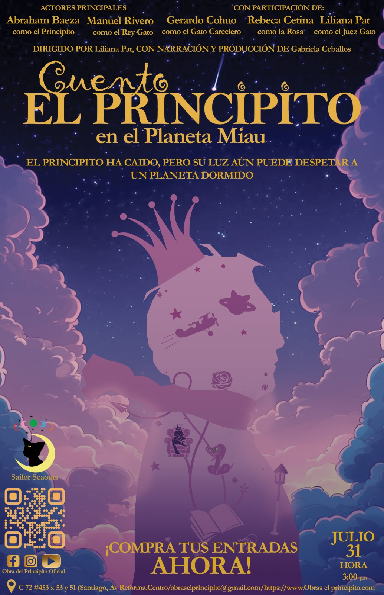

Proyecto TeatralCuentos infantiles con la técnica de enanos falsos Sobre el ProyectoEsta obra teatral busca explorar el mundo fantástico de los cuentos clásicos desde una perspectiva moderna y creativa. El objetivo es entretener y educar al público infantil, generando una experiencia visual impactante que despierte la imaginación. Público objetivo: Infantil. Posters Promocionales:


Síntesis del cuento "El Principito"El Principito, escrito por Antoine de Saint-Exupéry, es un cuento filosófico y poético que narra la historia de un pequeño príncipe proveniente de un asteroide llamado B-612. Un aviador, que se ha estrellado en el desierto del Sahara, conoce al principito, quien le relata sus viajes por diferentes planetas. En cada uno, encuentra personajes simbólicos: un rey, un vanidoso, un bebedor, un hombre de negocios, un farolero y un geógrafo, todos representando aspectos absurdos del mundo adulto. El principito también cuenta su historia con una rosa, a la que ama profundamente, aunque su comportamiento lo confundía. En la Tierra, aprende valiosas lecciones sobre el amor, la amistad y la esencia de las cosas, especialmente al conocer a un zorro que le enseña que "lo esencial es invisible a los ojos". A lo largo de su relato, se revela una crítica a la superficialidad y rigidez del mundo adulto, contrastada con la pureza e intuición infantil. La historia termina con la partida del principito, dejando una huella emocional en el aviador y en el lector. Es un cuento que invita a reflexionar sobre el valor de lo simple, lo invisible y lo verdaderamente importante en la vida. Adaptación "El Principito en el Planeta Miau":Durante su viaje por el universo, el Principito sufre una inesperada caída y aterriza en un mundo extraño cuya atmósfera tiene forma de cabeza de gato: el misterioso Planeta Miau. Allí, una civilización de gatos gigantes y desconfiados lo recibe con miedo y rechazo. Acusado injustamente de ser un invasor, el Principito es arrestado y encerrado, enfrentando un juicio absurdo sin oportunidad de defenderse. Sin embargo, entre barrotes, recuerdos y la ayuda de su amada rosa, el Principito descubre que tras la hostilidad de los gatos se oculta algo más profundo: una herida colectiva, manipulada por una figura oscura, "la Cobra", que ha infectado el corazón del rey gato con miedo y abandono. Con su característica bondad y sabiduría, el Principito deberá recordarles a los habitantes del Planeta Miau el valor del amor, la empatía y la conexión. Una historia que habla sobre lo que pasa cuando el miedo se disfraza de poder, y de cómo la ternura puede romper cualquier hechizo. Una aventura cósmica sobre el perdón, la confianza y los lazos que elegimos cuidar. |